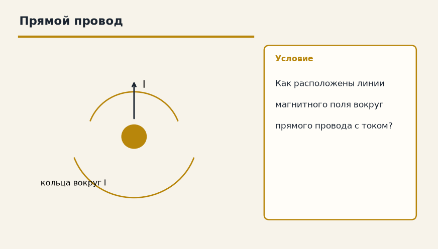

Тема «Магнитное поле тока»: физический смысл, единицы величин, типичные ошибки и два разобранных примера.

Схема к условию.
Физический смысл
Вокруг любого движущегося заряда (тока) существует магнитное поле. Оно действует на другие движущиеся заряды. Поле описывается линиями магнитной индукции (B⃗).
Движущийся заряд, а значит и ток, окружён магнитным полем. Оно действует на другие движущиеся заряды и на магниты. Картину поля рисуют линиями магнитной индукции B⃗.
Направление линий вокруг прямого провода даёт правило буравчика: вкручивай буравчик по току, ручка крутится по линиям. У катушки буравчик вкручивают по току в витках, а поступательное движение показывает северный конец.
Компас у Земли встаёт вдоль линий магнитного поля планеты. Стрелка — маленький магнит, и поле поворачивает её так же, как линии вокруг провода поворачивают другую стрелку.
Формула и единицы
Магнитное поле есть вокруг движущихся зарядов. Направление линий — правило буравчика.
Пояснение
Магнитное поле Земли. Компас показывает на север, потому что стрелка ориентируется по линиям поля.
Компас смотрит на север, потому что стрелка выстраивается вдоль линий магнитного поля Земли.
Типичные ошибки
Линии B не совпадают с направлением тока. Ток — ось, линии — кольца вокруг неё (для прямого провода).
Схему к задаче нарисуйте сами. Решение открывается отдельно.
Разбор 1
Где есть поле
Вокруг чего возникает магнитное поле в этой теме?
Сначала данные, затем перевод в СИ, если он нужен, потом ход и ответ.
Дано. движущиеся заряды
В СИ. Перевод не нужен: все величины уже заданы в СИ.
Найти. источник
Решение.
Вокруг проводника с током и вообще вокруг движущегося заряда.
Вокруг тока.
Схема для сверки. Её рисуют до того, как открывают решение.
Разбор 2
Буравчик
Буравчик вкручивают по направлению тока в прямом проводе. Что показывает вращение рукоятки?
Сначала данные, затем перевод в СИ, если он нужен, потом ход и ответ.
Дано. прямой провод с током
В СИ. Перевод не нужен: все величины уже заданы в СИ.
Найти. направление
Решение.
Направление линий магнитной индукции.
Направление линий B.
Схема для сверки. Её рисуют до того, как открывают решение.
Разбор 3
Форма
Какую форму имеют линии поля прямого длинного провода?
Сначала данные, затем перевод в СИ, если он нужен, потом ход и ответ.
Дано. прямой провод
В СИ. Перевод не нужен: все величины уже заданы в СИ.
Найти. форма
Решение.
Это окружности, охватывающие провод.
Окружности вокруг провода.
Схема для сверки. Её рисуют до того, как открывают решение.
Разбор 4
Компас
Почему стрелка компаса поворачивается, если рядом нет магнита, но есть магнитное поле Земли?
Сначала данные, затем перевод в СИ, если он нужен, потом ход и ответ.
Дано. стрелка сама магнит
В СИ. Перевод не нужен: все величины уже заданы в СИ.
Найти. причина
Решение.
Стрелка устанавливается вдоль линий поля.
Она встаёт вдоль линий поля.
Схема для сверки. Её рисуют до того, как открывают решение.
Разбор 5
Не вдоль тока
Ученик рисует линии B прямого провода параллельно току. Что исправить?
Сначала данные, затем перевод в СИ, если он нужен, потом ход и ответ.
Дано. правило буравчика
В СИ. Перевод не нужен: все величины уже заданы в СИ.
Найти. направление линий
Решение.
Линии охватывают провод, а не идут вдоль него.
Линии идут кольцами вокруг провода.
Схема для сверки. Её рисуют до того, как открывают решение.
Разбор 6
Буква
Что обозначают символом B?
Сначала данные, затем перевод в СИ, если он нужен, потом ход и ответ.
Дано. характеристика магнитного поля
В СИ. Перевод не нужен: все величины уже заданы в СИ.
Найти. величина
Решение.
Магнитную индукцию.
Магнитную индукцию.
Схема для сверки. Её рисуют до того, как открывают решение.
Разбор 7
Сильнее ток
Ток в прямом проводе увеличили, точка наблюдения та же. Что можно сказать о поле в этой точке качественно?
Сначала данные, затем перевод в СИ, если он нужен, потом ход и ответ.
Дано. I вырос, r тот же
В СИ. Перевод не нужен: все величины уже заданы в СИ.
Найти. B
Решение.
Индукция поля прямого тока растёт с током.
Поле стало сильнее.
Схема для сверки. Её рисуют до того, как открывают решение.